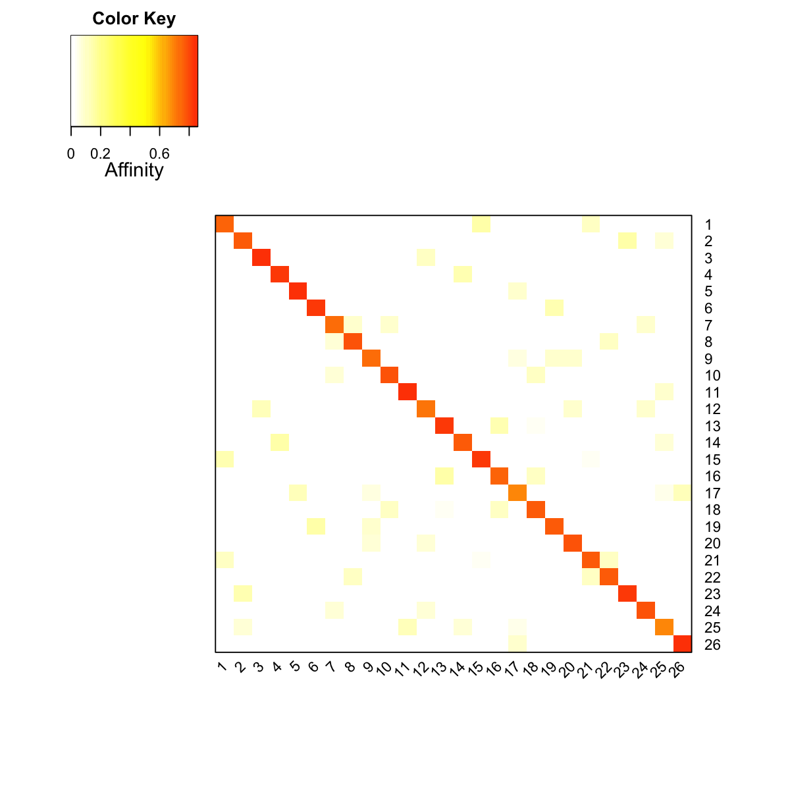

# RWR is a algorithm originally proposed for image segmentation. It iteratively explores the global structure of the network to estimate the proximity (affinity score) between two nodes. Starting at a node, the walker faces two choices at each step: either moving to a randomly chosen neighbor, or jumping back to the starting node. This algorithm only contains one fixed parameter r called 'the restarting probability' (with 1 − r for the probability of moving to a neighbor). After iteratively reaching stability, the steady probability vector contains the affinity score of all nodes in the network to the starting node. This steady probability vector can be viewed as the 'influential impact' over the network imposed by the starting node.
# In addition to a single starting node, RWR can be extended to a set of starting nodes. In this context, the resulting steady probability vector can also be considered as the 'influential impact' over the network, but collectively imposed by a set of starting nodes.
# The steady probability vector for a set of starting nodes can be calculated according to the steady probability vector for single starting nodes. For this reason, it is useful to pre-compute affinity matrix for nodes in the graph with respect to each starting node as a seed (by looping over every node in the graph). The motivation behind this is that this pre-computed affinity matrix can be extensively reused for obtaining affinity scores between any combinations of nodes. For instance, such a strategy can dramatically relieve the computational burden involved in sampling a large number of random node combinations. Therefore, this pre-computation does permit some flexibility in the downstream use, in particular for statistical testing.
# In the dnet package, RWR for a single node or a set of nodes are both implemented in the function dRWR.
## generate a random graph generated according to the ER model, and only keep the largest component
g <- erdos.renyi.game(100, 1/100)
g <- dNetInduce(g, nodes_query=V(g))
V(g)$name <- 1:vcount(g)
## obtain the pre-computated affinity matrix for all nodes
PTmatrix <- dRWR(g, normalise="laplacian", restart=0.75)
Start at 2014-12-16 17:18:19
First, get the adjacency matrix of the input graph (2014-12-16 17:18:19) ...
Then, normalise the adjacency matrix using laplacian normalisation (2014-12-16 17:18:19) ...
Third, RWR of 11 sets of seeds using 7.5e-01 restart probability (2014-12-16 17:18:19) ...
do parallel computation using 2 cores ...
Finally, output 11 by 11 affinity matrix normalised by none (2014-12-16 17:18:24) ...
Finish at 2014-12-16 17:18:24
Runtime in total is: 5 secs
### visualise affinity matrix
visHeatmapAdv(as.matrix(PTmatrix), Rowv=FALSE, Colv=FALSE, colormap="wyr", KeyValueName="Affinity")

## obtain affinity score for a set of nodes
setSeeds <- as.integer(runif(vcount(g))>=0.5) # generate a random binary vector as a seedSet
setSeeds <- as.matrix(setSeeds, ncol=1) # must be a matrix
rownames(setSeeds) <- 1:vcount(g) # must be having rownames
PTmatrix <- dRWR(g, normalise="laplacian", setSeeds=setSeeds, restart=0.75)
Start at 2014-12-16 17:18:24
First, get the adjacency matrix of the input graph (2014-12-16 17:18:24) ...
Then, normalise the adjacency matrix using laplacian normalisation (2014-12-16 17:18:24) ...
Third, RWR of 1 sets of seeds using 7.5e-01 restart probability (2014-12-16 17:18:24) ...
do parallel computation using 2 cores ...
1 out of 1 seed sets (2014-12-16 17:18:24)
Finally, output 11 by 1 affinity matrix normalised by none (2014-12-16 17:18:24) ...
Finish at 2014-12-16 17:18:24
Runtime in total is: 0 secs
# As you have noticed, here high-performance parallel computing is used but only for Linux or Mac operating systems. You can specify the number of cores via the parameter 'multicores'.
# One of potential utility of using RWR is to estimate sample relationships (ie contact strength between samples) from an input gene-sample matrix. It should be noted: each value in input gene-sample matrix does not necessarily have to be binary (non-zeros will be used as a weight, but should be non-negative for easy interpretation).
# The pipeline includes: 1) RWR of the input graph using the input matrix as seeds; 2) calculation of contact strength (inner products of RWR-smoothed columns of input matrix); 3) estimation of the contact signficance by a randomalisation procedure.
## Prepare for input gene-sample matrix: vcount(g) X 10
data <- matrix(runif(vcount(g)*10), ncol=10)
rownames(data) <- 1:vcount(g)
colnames(data) <- paste('S', 1:10, sep='')
## Run using the pipeline
dContact <- dRWRpipeline(data, g, restart=0.75)
Start at 2014-12-16 17:18:24
First, RWR on input graph (11 nodes and 10 edges) using input matrix (11 rows and 10 columns) as seeds (2014-12-16 17:18:24)...
Second, calculate contact strength (2014-12-16 17:18:25)...
Third, generate the distribution of contact strength based on 10 permutations on nodes respecting random (2014-12-16 17:18:25)...
do parallel computation using 2 cores ...
Last, estimate the significance of contact strength: zscore, pvalue, and BH adjusted-pvalue (2014-12-16 17:18:26)...
Also, construct the contact graph under the cutoff 5.0e-02 of adjusted-pvalue (2014-12-16 17:18:26)...
Finish at 2014-12-16 17:18:26
Runtime in total is: 2 secs
## Run using two steps instead: first pre-compute affinity matrix, and then estimate RWR-based sample relationships
Amatrix <- dRWR(g, restart=0.75)
Start at 2014-12-16 17:18:26
First, get the adjacency matrix of the input graph (2014-12-16 17:18:26) ...
Then, normalise the adjacency matrix using laplacian normalisation (2014-12-16 17:18:26) ...
Third, RWR of 11 sets of seeds using 7.5e-01 restart probability (2014-12-16 17:18:26) ...
do parallel computation using 2 cores ...
Finally, output 11 by 11 affinity matrix normalised by none (2014-12-16 17:18:27) ...
Finish at 2014-12-16 17:18:27
Runtime in total is: 1 secs
dContact <- dRWRcontact(data, g, Amatrix)
Start at 2014-12-16 17:18:27
First, RWR on input graph (11 nodes and 10 edges) using input matrix (11 rows and 10 columns) as seeds and pre-computed affinity matrix (11 rows and 11 columns) (2014-12-16 17:18:27)...
Second, calculate contact strength (2014-12-16 17:18:27)...
Third, generate the distribution of contact strength based on 10 permutations on nodes respecting random (2014-12-16 17:18:27)...
do parallel computation using 2 cores ...
Last, estimate the significance of contact strength: zscore, pvalue, and BH adjusted-pvalue (2014-12-16 17:18:27)...
Also, construct the contact graph under the cutoff 5.0e-02 of adjusted-pvalue (2014-12-16 17:18:27)...
Finish at 2014-12-16 17:18:27
Runtime in total is: 0 secs
){kind=link}